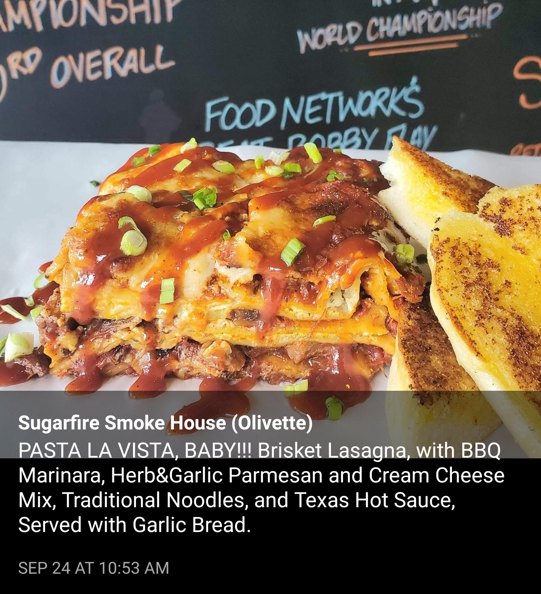
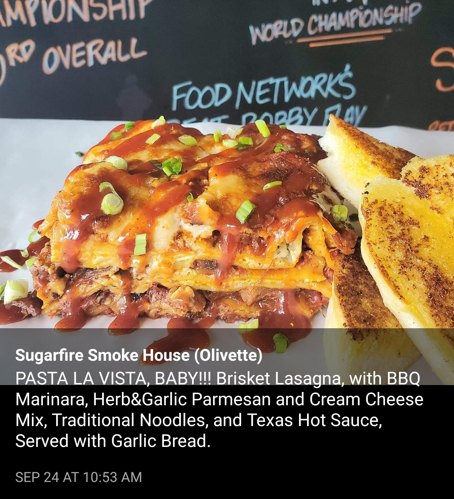

Blues City Deli
I am incredibly lucky to live extremely close to one of St. Louis's best delis! I think I may have about 6 or 7 "favorite sandwiches" at Blues City Deli at this point, but in 2019, I was especially fond of their Thunderbird and Aporkalypse sandwiches.

Nobu's
One of St. Louis's longest-run and most revered sushi bars, Nobu's has been notable for their high-quality fish, some of which was flown in from Japan, and for their menu serving many homestyle Japanese entrees outside of the typical American Japanese restaurant California roll, teriyaki, and katsu canon.
A development project for a new Costco location went on to displace Nobu's and the other tenants of the same University City, MO shopping center in 2021, but the fear that owner-chef Noboru Kidera and his restaurant might not return were thankfully short-lived -- Nobu's has moved to St. Louis's Delmar Loop and has been running reservation-only omakase dinners in anticipation of their upcoming re-opening.

Asian Kitchen
Up Olive Blvd. from Nobu's, Asian Kitchen is a Korean restaurant part of the same St. Louis neighborhood known for its East Asian restaurants. This restaurant space is a little bittersweet for me to visit, since it was once part of my dad's now-closed guitar store, but when I visited Asian Kitchen in 2019, it had just come into the hands of Liling Wemhoener, who'd previously been a neighbor and friend to my dad and I when she was running Chinese-Taiwanese-Korean restaurant Shu Feng elsewhere in the building years before.
The banchan were on point, and I was a big fan of both the bibimbap, and the hot pot options!

LoRusso's Cucina
I've spent many, many dinners at LoRusso's over the course of my lifetime, and as affirmed by St. Louis Magazine's recent online vote, I think they serve the tastiest example of fried St. Louisan local specialty, toasted ravioli.
Their eggplant parmesan lasagna has grown to be a favorite of mine in recent years as well. Sadly, unbelievably kind co-owner and chef Rich LoRusso passed away in 2022 after battling ALS, but his recipes can still be had at LoRusso's today.
Vodka Pasta
After trying ziti con vodka at LoRusso's, I've become a lifelong vodka pasta aficionado -- it's one of the first recipes I ever taught myself how to cook.
While New Yorkers and New Jerseyans have a wealth of opportunities to partake of the delights of tomato-vodka pink sauces, vodka pasta is much harder to come by at St. Louis restaurants.
Two of the few Italian restaurants serving vodka pasta in 2019, Filippo's & Mangia Italiano, have both closed since COVID hit, and while I still have every opportunity to cook it at home, it's been increasingly clear since 2019 that I have acid reflux, so frankly, I'm afraid to even try it again at this point to confirm that it probably isn't something that I can comfortably eat anymore.
Mangia Italiano's Vegan Menu
Speaking of Mangia Italiano, they quietly also happened to introduce an incredible vegan menu in the late 2010s. My girlfriend being vegetarian, their vegan "chicken" sandwich and vegan wings became part of a regular routine for us, but unfortunately, even as a then-vital part of St. Louis's South Grand district, it did not make it past 2020.

Handlebar
This chimichanga I ate in Chicago was also vegan. I'm now addicted to it and it is no longer possible for me to visit Chicago without eating it again.
Protzel's
I've been on a big tear over the last year or so looking for a great bagel and lox in the City of St. Louis, but I know if I want the best in the general St. Louis metro area, I should probably just be heading back to Protzel's in Clayton, one of very few Jewish delis left in St. Louis, and in fact, one of a dwindling number throughout the U.S.

Sugarfire Smoke House
When I started working at Sugarfire Smoke House, one of St. Louis's most well-known barbecue restaurants, there was only one location, and today there are 16 nationwide locations of it.
Each location is individually chef-driven with creative daily specials, and for several years I was regularly lucky enough to partake of said specials! Some of my standout favorites from 2019 included:
 
